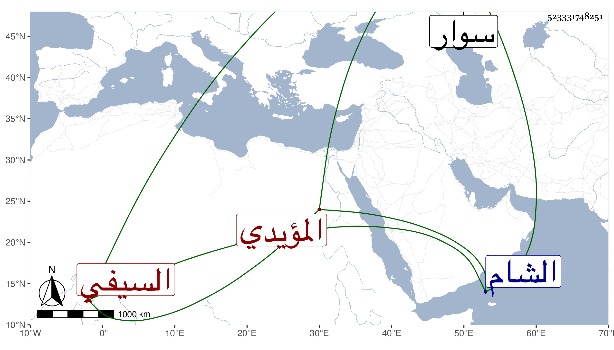

0902Sakhawi.DawLamic.ITO20230111-ara1.EIS1600.523331748251
Biography ID: 523331748251
546
فارس السيفي دولات باي المؤيدي . ترقى في حياة أستاذه بحيث كان أمير الأول حين كان أسنتاذه أمير المحمل آخر سني الظاهر جقمق وتمول جدا وابتنى الأماكن الجليلة وآل أمره إلى أن استقر به الأشرف قايتباي زردكاشا بعد أن أمره وتوجه إلى الشام صحبة إينال الأشقر إلى سوار فجاء الخبر بموته في أثناء صفر سنة خمس وسبعين ولم يكن بالمرضي سامحه الله .
